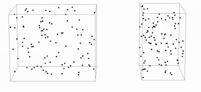

Numim gaz ideal un model simplificat de gaz, alcătuit din
particule având dimensiuni neglijabile şi care nu interacţionează decât prin ciocniri perfect elastice.
Numim gaz ideal un model simplificat de gaz, alcătuit din
particule având dimensiuni neglijabile şi care nu interacţionează decât prin ciocniri perfect elastice.
Elemente de termodinamică. |
Transformări simple ale gazului ideal |
E-1. |
Gazul ideal |
Numim gaz ideal un model simplificat de gaz, alcătuit din
particule având dimensiuni neglijabile şi care nu interacţionează decât prin ciocniri perfect elastice.
 Provocarea 1-1
Provocarea 1-1
Care sunt parametrii de care te aştepţi să depindă presiunea unui gaz ideal?
Presiunea unui gaz ideal se datorează doar ciocnirilor perfect elastice dintre particulele gazului şi pereţii incintei care îl conţine. La fiecare ciocnire este transferat impuls către peretele incintei (figura 1−1).
Presiunea gazului ideal va depinde de cât de dese sunt ciocnirile cu pereţii (câte ciocniri au loc în fiecare secundă şi pe fiecare metru pătrat al pereţilor) şi cât de mult impuls este transferat la fiecare ciocnire.
Provocarea 1-2
Dacă se dublează numărul particulelor din incintă (figura 1−2), fără a modifica nimic altceva, ce te aştepţi să se întâmple cu presiunea gazului ideal?

Figura 1-2. Dublarea numărului de particule din incintă.
Dublarea numărului de particule din incintă dublează rata ciocnirilor, astfel că presiunea se dublează. Tot astfel, triplarea numărului de particule ar avea ca efect triplarea presiunii gazului.
Aşadar, presiunea gazului ideal este direct proporţională cu numărul particulelor gazului dintr−o incintă:
| p ~ N | (1) |
Provocarea 1-3
Dacă se înjumătăţeşte volumul incintei, apropiind doi pereţi aflaţi faţă în faţă la jumătatea distanţei dintre aceştia (figura 1−3), fără a schimba nimic altceva, ce te aştepţi să se întâmple cu presiunea gazului ideal?

Figura 1-3. Înjumătăţirea volumului incintei prin apropierea a doi pereţi aflaţi
faţă în faţă.
Înjumătăţind distanţa dintre doi pereţi aflaţi faţă în faţă, particulele vor parcurge de două ori mai des distanţa dintre aceştia − rata ciocnirilor se dublează, chiar dacă nu sunt mai multe particule în incintă. Astfel, presiunea se dublează. Dacă s−ar reduce de trei ori volumul incintei, presiunea s−ar tripla.
Aşadar, presiunea gazului ideal este invers proporţională cu volumul incintei:
| p ~ V -1 | (2) |
Provocarea 1-4
Dacă se dublează masa fiecărei particule din incintă, fără a modifica nimic altceva, ce te aştepţi să se întâmple cu presiunea gazului ideal?
Dublarea masei fiecărei particule dublează impulsul transferat la fiecare ciocnire, chiar dacă rata ciocnirilor rămâne aceeaşi. Astfel, presiunea se dublează. Triplarea masei fiecărei particule ar avea ca efect triplarea presiunii.
Aşadar, presiunea gazului ideal este direct proporţională cu masa particulelor:
| p ~ m0 | (3) |
Provocarea 1-5
Dacă se dublează viteza fiecărei particule din incintă, fără a modifica nimic altceva (figura 1−4), ce te aştepţi să se întâmple cu presiunea gazului ideal?
Figura 1-4. Dublarea vitezei fiecărei particule din incintă.
Dublarea vitezei fiecărei particule are un dublu efect: se dublează impulsul transferat la fiecare ciocnire, dar se dublează şi rata ciocnirilor (particulele parcurg de două ori mai des distanţa dintre pereţii aflaţi faţă în faţă). Astfel, presiunea creşte de patru ori! Dacă s−ar tripla vitezele particulelor, presiunea ar creşte de nouă ori.
Aşadar, presiunea gazului este direct proporţională cu media pătratelor vitezelor pe o anumită direcţie:
| (4) |
În relaţia precedentă am fost nevoiţi să considerăm doar componentele vitezelor pe o anumită axă Ox (între doi pereţi faţă în faţă). Medierea este necesară pentru că particulele pot avea componente diferite ale vitezei faţă de axa Ox.
Sintetizând rezultatele prezentate în relaţiile (1)...(4), obţinem că presiunea gazului ideal este:
| (5) |
Poţi pune relaţia (5) sub forma:
| (6) |
 este energia cinetică medie a mişcărilor de translaţie ale particulelor pe direcţia x.
este energia cinetică medie a mişcărilor de translaţie ale particulelor pe direcţia x.
Relaţia (6) exprimă presiunea gazului ideal doar în funcţie de parametrii moleculari: numărul particulelor, volumul în care se mişcă acestea şi energia cinetică medie a mişcărilor de translaţie de−a lungul unei axe.